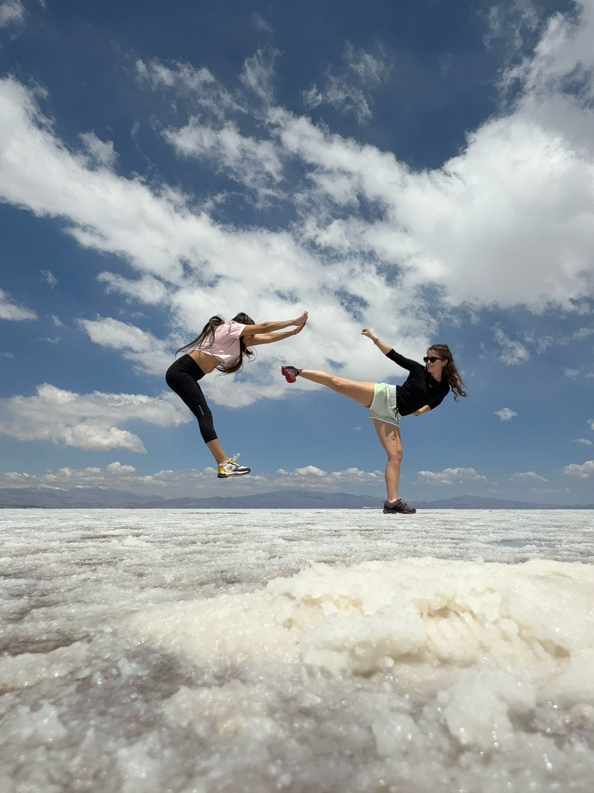
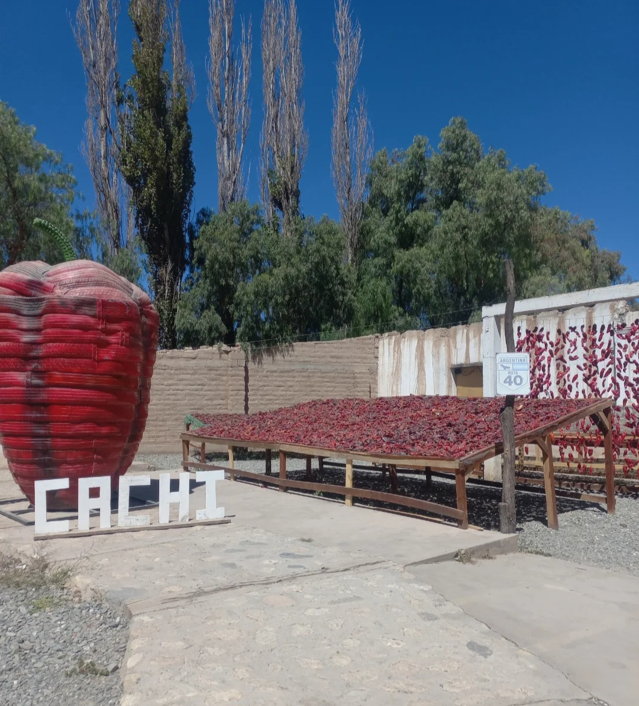
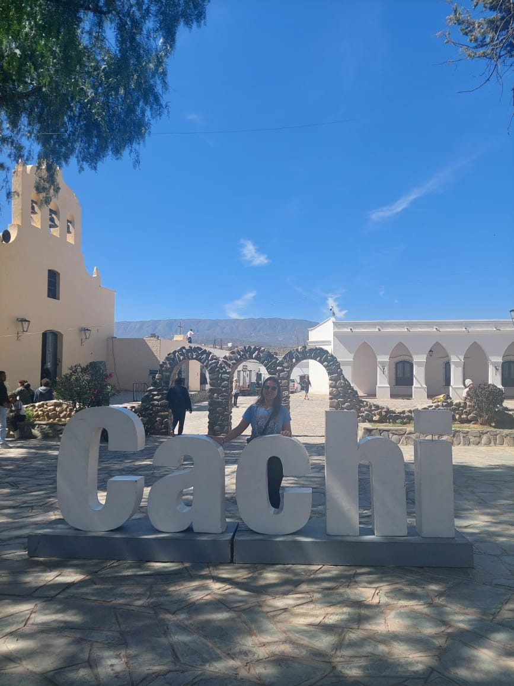
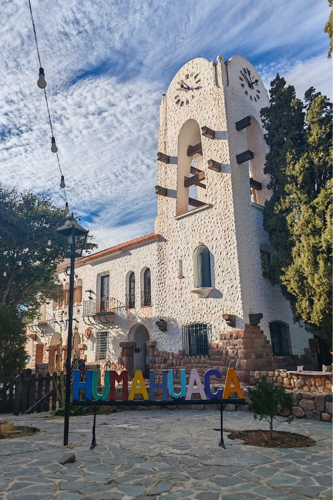

Salinas Grandes
🌞 Descubre un mundo blanco y multicolor en esta inolvidable excursión a Salinas Grandes y Purmamarca, dos de los destinos más emblemáticos del norte argentino. Un viaje que te llevará a través de paisajes surrealistas, culturas ancestrales y alturas imponentes, hasta llegar al espejo salino que parece tocar el cielo.
Tu aventura comienza temprano
Salida desde Salta Capital entre las 6:30 y 7:30 am, dirección a Jujuy. Atravesaremos la Ruta 9, rodeados de paisajes desérticos y culturas vivas, pasando por pueblos como Volcán (2070 msnm) y Tumbaya, hasta llegar al mágico Cerro de los 7 Colores y su encantador pueblo: Purmamarca.
Purmamarca: El color de la tradición
Este pintoresco pueblo de adobe, a los pies del Cerro de los 7 Colores, es un destino que enamora al primer vistazo. Tendrás tiempo libre para explorar sus callecitas, visitar su plaza principal o llevarte un recuerdo único de sus artesanías autóctonas.
Salinas Grandes: El mar de sal bajo el cielo andino
Desde Purmamarca, tomamos la Ruta 52, una de las más altas del país, que nos lleva hasta los 4.170 metros sobre el nivel del mar, al corazón de Salinas Grandes — un auténtico mar de sal que se extiende hasta donde alcanza la vista.
- Visita una casa completamente construida en sal (solo el techo y algunas vigas son de madera).
- Conoce los piletones de extracción de sal y descubre cómo se extrae este recurso natural.
- Vive una experiencia única: caminar sobre la sal y disfrutar de un paisaje surrealista, ideal para fotos inolvidables.
Nota: La entrada incluye una pequeña contribución para el guía local (aprox. $4.000 por persona).
Tiempo libre para almorzar en Purmamarca
Tras la visita a Salinas, regresamos a Purmamarca al mediodía. Allí tendrás tiempo libre para almorzar (no incluido) y probar platos típicos como el locro, humitas o empanadas salteñas.
Paseo de los Colorados: Naturaleza en estado puro
Después del almuerzo, nos dirigimos al Paseo de los Colorados, un sendero de aproximadamente 3 kilómetros bordeado de formaciones rojizas que contrastan con el cielo azul. Ideal para una breve caminata, tomar fotos y conectarse con la naturaleza más pura.
¿Qué incluye el servicio?
- ✅ Traslado ida y vuelta desde tu hotel en Salta Capital
- ✅ Seguro de viaje
- ✅ Guía profesional durante todo el recorrido
- ✅ Paradas en los puntos más destacados del itinerario
Información práctica
- 🕒 Horario aproximado de regreso: Entre las 19:00 y las 20:00 horas.
- 📍 Paradas incluidas: Purmamarca (con tiempo libre), Balcón de la Cuesta (vista panorámica), Salinas Grandes (visita guiada), Paseo de los Colorados (caminata opcional).
¿Listo para tu aventura?
📞 ¡Reserva tu experiencia hoy! Vive una jornada inolvidable entre paisajes de ensueño, alturas imponentes y colores que desafían la imaginación. Ideal para amantes de la naturaleza, la fotografía y las experiencias únicas.
Reservar ahora



Cachi
🌄 Descubre la magia de los Valles Calchaquíes en esta inolvidable excursión a **Cachi**, uno de los pueblos más encantadores del norte argentino. Un viaje que combina paisajes imponentes, historia colonial y la serenidad de un rincón andino que parece detenido en el tiempo.
Tu aventura comienza temprano
Salida desde Salta Capital entre las 6:30 y 7:30 am, con destino a Cachi. Durante el trayecto, atravesaremos paisajes únicos y pueblos con historia, como Cerrillos, La Merced y El Carril, hasta llegar a la Quebrada de Escoipe, un rincón verde y selvático que despierta todos los sentidos.
Cuesta del Obispo: una subida inolvidable
Prepárate para una de las rutas más espectaculares del norte argentino. La Cuesta del Obispo te llevará hasta los 3.348 metros sobre el nivel del mar, pasando por el famoso Piedra del Molino, el punto más alto del recorrido. Allí encontrarás la Capilla de San Rafael, un lugar ideal para detenerte, tomar fotos y admirar la majestuosidad de los Andes.
Parque Nacional Los Cardones: naturaleza centenaria
Al descender, ingresaremos al Parque Nacional Los Cardones, hogar de imponentes cactus que han resistido el paso del tiempo. No te pierdas el Último Cardón, un símbolo de esta región y uno de los puntos más fotografiados del recorrido.
Llegada a Cachi: el alma de los Valles Calchaquíes
Y por fin… ¡llegamos a **Cachi**! Este pintoresco pueblo colonial, con sus **calles empedradas y arquitectura tradicional**, parece sacado de una postal. Visita el **Museo Arqueológico**, lleno de tesoros del pasado, y la **Iglesia Parroquial del siglo XVII**, joya de la arquitectura regional.
Tendrás 2 horas de tiempo libre para almorzar (no incluido), recorrer o simplemente disfrutar de la paz y la belleza de este rincón único de Argentina.
Paradas destacadas del recorrido
- 📍 Pie de la Cuesta
- 📍 Balcón de la Cuesta (vista panorámica)
- 📍 Piedra del Molino (máxima altura)
- 📍 Parque Nacional Los Cardones
- 📍 Especiero
- 📍 Cachi (visita de 2 horas)
¿Qué incluye el servicio?
- ✅ Traslado ida y vuelta desde tu hotel en Salta Capital
- ✅ Seguro de viaje
- ✅ Guía profesional durante todo el recorrido
- ✅ Paradas en los puntos más destacados del itinerario
Información práctica
- 🚌 Salidas diarias
- 🕒 Horario de salida: 6:30 - 7:30 am
- 🌇 Regreso estimado: entre las 19:00 y 20:00 horas
¿Listo para conocer Cachi?
🌵✨ ¡Reserva tu excursión hoy! Vive una jornada inolvidable entre paisajes ancestrales, historia y la serenidad de un pueblo que parece detenido en el tiempo. Ideal para amantes de la naturaleza, la fotografía y la cultura regional.
Reservar ahora



Humahuaca + Hornocal
🌈 Descubre la Magia de Colores de Humahuaca y el Majestuoso Hornocal en una excursión única desde Salta. Un viaje épico por uno de los paisajes más vibrantes del norte argentino, donde la naturaleza, la historia y la cultura andina se unen en una experiencia inolvidable.
Tu aventura comienza temprano
Salida desde Salta Capital a las 6:30 am, con traslado cómodo y seguro hacia el norte jujeño. Atravesaremos pueblos pintorescos como San Salvador de Jujuy, punto de partida hacia la histórica Quebrada de Humahuaca, Patrimonio de la Humanidad. Recorreremos encantadores pueblos como Volcán, Tumbaya y Purmamarca, hogar del famoso Cerro de los Siete Colores.
La Quebrada de Humahuaca: un espectáculo de colores y tradiciones
Prepárate para maravillarte con uno de los paisajes más vibrantes de América. La Quebrada de Humahuaca es un corredor natural que conecta culturas durante más de 10 mil años. Cada pueblo tiene su encanto único:
- 🎨 Purmamarca - El pueblo bajo el Cerro de los Siete Colores
- 🎭 Tilcara - Hogar del famoso Pucará y artesanías ancestrales
- 🏛️ Humahuaca - Ciudad histórica con el Monumento a la Independencia
- 🏪 Plazas artesanales - Donde comprar auténtica artesanía local
Durante el recorrido haremos paradas estratégicas para disfrutar de las mejores vistas, conocer la cultura local y capturar fotos inolvidables.
Hornocal: El Cerro de 14 Colores
La joya de la corona nos espera en Hornocal, una formación geológica única ubicada a 25 km de Humahuaca. A 4350 metros de altura, este gigante estratificado ofrece un espectáculo visual sin igual: 14 capas de colores naturales que se extienden ante tus ojos como si la tierra misma hubiera pintado su obra maestra.
Entre las maravillas incluidas:
- 🌈 Hornocal - El famoso Cerro de 14 Colores a 4350 metros
- 🧭 Balcón panorámico - Vista espectacular del majestuoso cerro
- 🌍 Formación geológica única - 75 millones de años de historia
En el camino de regreso visitaremos el Trópico de Capricornio en Huacalera y la Paleta del Pintor en Maimará.
Paradas incluidas durante el recorrido
- 📍 Purmamarca - Cerro de los Siete Colores y plaza artesanal
- 📍 Tilcara - Pueblo ancestral y tiempo libre
- 📍 Humahuaca - Ciudad histórica y almuerzo incluido
- 📍 Hornocal - El Cerro de 14 Colores
- 📍 Trópico de Capricornio - En Huacalera
- 📍 Paleta del Pintor - En Maimará
¿Qué incluye el servicio?
- ✅ Traslado ida y vuelta desde tu hotel en Salta Capital
- ✅ Seguro de viaje
- ✅ Guía profesional durante todo el recorrido
- ✅ Almuerzo típico en Humahuaca
- ✅ Paradas en los puntos más destacados del itinerario
- ✅ Entradas a todas las atracciones
Información práctica
- 🚌 Salidas diarias
- 🕒 Horario de salida: 6:30 am
- 🌇 Regreso estimado: 20:30 horas
- ⏱ Duración total: 14 horas aproximadamente
¿Listo para tu aventura multicolor?
🌈🏔️✨ ¡Reserva tu excursión hoy! Vive un día lleno de naturaleza, historia, cultura andina y los paisajes más vibrantes de Argentina. Ideal para amantes de la aventura, la fotografía y la naturaleza. ¡No te lo pierdas!
Reservar ahora


Cafayate
🍇 Descubre Cafayate y la Quebrada de las Conchas en una excursión única desde Salta. Un viaje inolvidable por uno de los paisajes más mágicos del norte argentino, donde la naturaleza, la historia y el buen vino se unen en una experiencia imperdible.
Tu aventura comienza temprano
Salida desde Salta Capital entre las 6:30 y 7:30 am, con traslado cómodo y seguro hacia el sur salteño. Atravesaremos pueblos pintorescos como Cerrillos, La Merced y El Carril, conocidos por su tradición tabacalera, hasta llegar al histórico Coronel Moldes. Allí disfrutarás de una vista privilegiada del Dique Cabra Corral y podrás conocer Alemania, un pueblo fantasma que guarda historias del pasado.
La Quebrada de las Conchas: un espectáculo de la naturaleza
Prepárate para maravillarte con uno de los paisajes más singulares del país. La Quebrada de las Conchas es un lienzo natural esculpido por el viento y el agua durante millones de años. Cada formación rocosa tiene su nombre y su historia:
- 🌋 La Garganta del Diablo
- 🎤 El Anfiteatro
- 🐸 El Sapo
- 🏰 Los Castillos
- ✝️ Las Tres Cruces
- 🪨 La Yesera
Durante el recorrido haremos paradas estratégicas para disfrutar de las mejores vistas y capturar fotos inolvidables.
Llegada a Cafayate: Capital del vino en altura
Al llegar a **Cafayate**, te sorprenderá su entorno natural: viñedos que se pierden en el horizonte y montañas que enmarcan una de las villas más lindas del país.
Entre las visitas incluidas:
- ⛪ La **Iglesia Catedral de Cafayate** (inaugurada en 1895), una de las tres iglesias con cinco naves paralelas en toda América.
- 🍷 **Bodegas locales** como Vasija Secreta, Tierra Colorada o Finca El Recreo, donde disfrutarás de un recorrido guiado por expertos y terminarás con una **degustación de los famosos vinos de altura** de la región.
Tendrás tiempo libre para almorzar (no incluido) y explorar el pueblo a tu gusto.
Paradas incluidas durante el recorrido
- 📍 Talapampa – fábrica de alfajores artesanales
- 📍 Garganta del Diablo
- 📍 El Anfiteatro
- 📍 Las Tres Cruces
- 📍 La Yesera
- 📍 Bodegas: Vasija Secreta, Tierra Colorada o Finca El Recreo
¿Qué incluye el servicio?
- ✅ Traslado ida y vuelta desde tu hotel en Salta Capital
- ✅ Seguro de viaje
- ✅ Guía profesional durante todo el recorrido
- ✅ Paradas en los puntos más destacados del itinerario
Información práctica
- 🚌 Salidas diarias
- 🕒 Horario de salida: entre las 6:30 y 7:30 am
- 🌇 Regreso estimado: entre las 19:00 y 20:00 horas
¿Listo para tu aventura en Cafayate?
🌄🍇✨ ¡Reserva tu excursión hoy! Vive un día lleno de naturaleza, historia, cultura y los mejores vinos de altura. Ideal para amantes de la aventura, la fotografía y el buen vino. ¡No te lo pierdas!
Reservar ahora
🚆🚂 Tren Solar de la Quebrada 🌞
Vive esta experiencia unica
Disfruta de un día inolvidable explorando la Quebrada de Humahuaca de una forma sostenible, divertida y diferente: con el primer tren motorizado por energía solar del país. 🌍✨
⏰ Tu aventura comienza temprano...
- 🚐 Salida desde Salta: 6:20 hs
>📍 Punto de encuentro: Calle Córdoba 2, centro de Salta
- 🛣️ Recorrido por las RN 9 y RN 34, pasando por pintorescos pueblos hasta llegar al Pueblo Volcán.
🚄 La experiencia TREN SOLAR
- 🕒 Ascenso al tren: 9:35 hs
- 🛤️ Recorrido: Volcán – Purmamarca – Tumbaya – Maimará – Tilcara
- ☀️ Energía 100% sostenible: Tren motorizado por energía solar
- 📸 Disfruta de paisajes multicolores, formaciones rocosas únicas y una conexión directa con la historia y cultura de la región.
🚶♂️ Explorá libremente las estaciones
Una vez en la Quebrada, podrás bajar y subir al tren las veces que quieras durante todo el día, para explorar a tu ritmo:
- 🏞️ Purmamarca: Con su famoso Cerro de los 7 Colores
- 🏯 Tilcara: Con su rica historia y el Pucará
- 🌄 Tumbaya y Maimará: Pueblos llenos de color, cultura y tradición
💡 Recomendación: ¡No te pierdas Purmamarca y Tilcara, dos de los destinos más fotografiados del norte argentino!
⏰ Regreso a Salta
- 🚌 Salida desde la estación Volcán: 19:45 hs
- 🏁 Llegada estimada a Salta: Aproximadamente 21:30 hs
- 🚐 Servicio incluido: Traslado de regreso en bus/minibus
📅 ¡Reservá tu lugar en esta experiencia única!
El cupo es limitado y la demanda, ¡muy alta! Asegurá tu lugar en el primer tren solar de Argentina y viví una aventura sostenible en uno de los paisajes más increíbles del país.
Reservar ahora